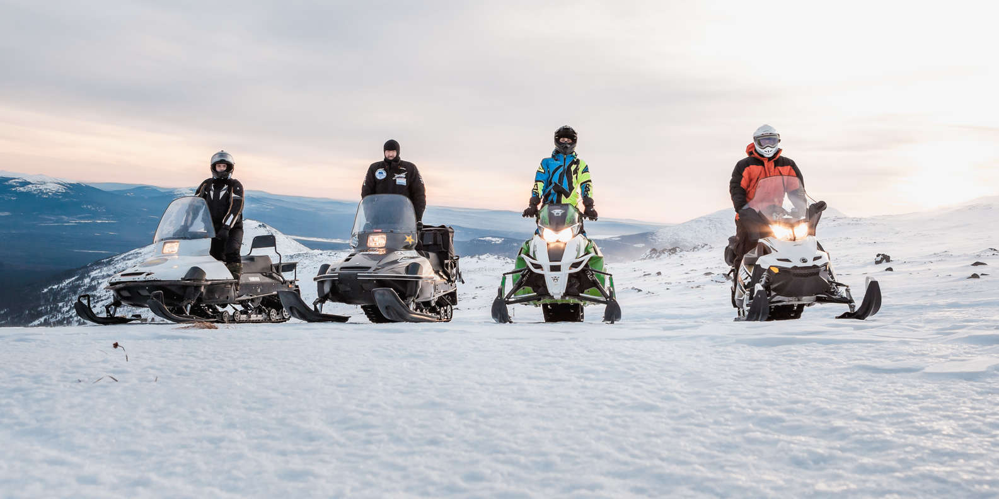
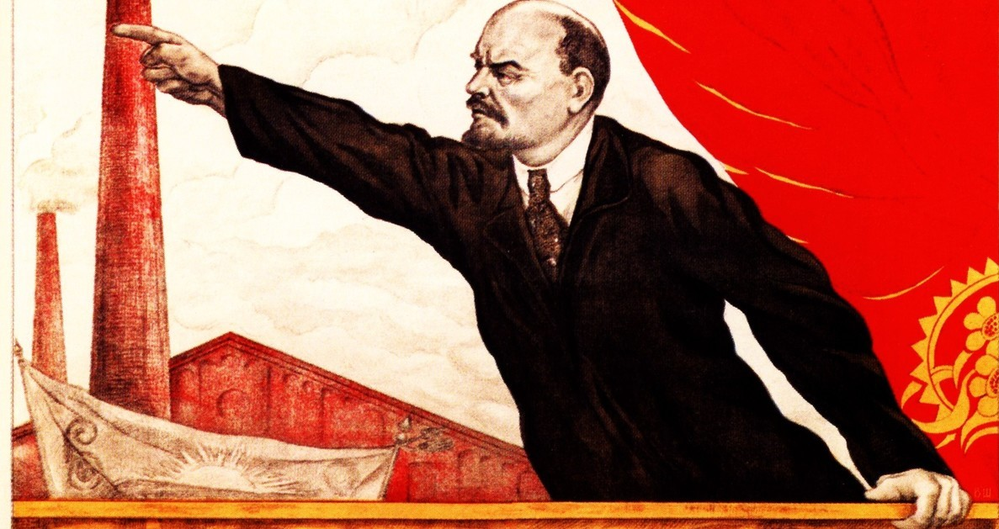
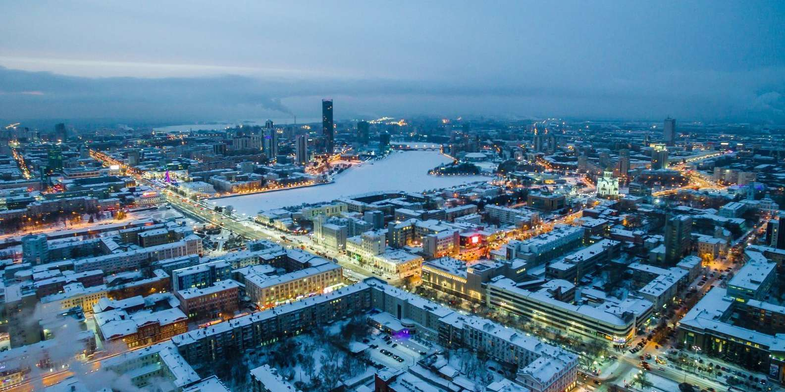
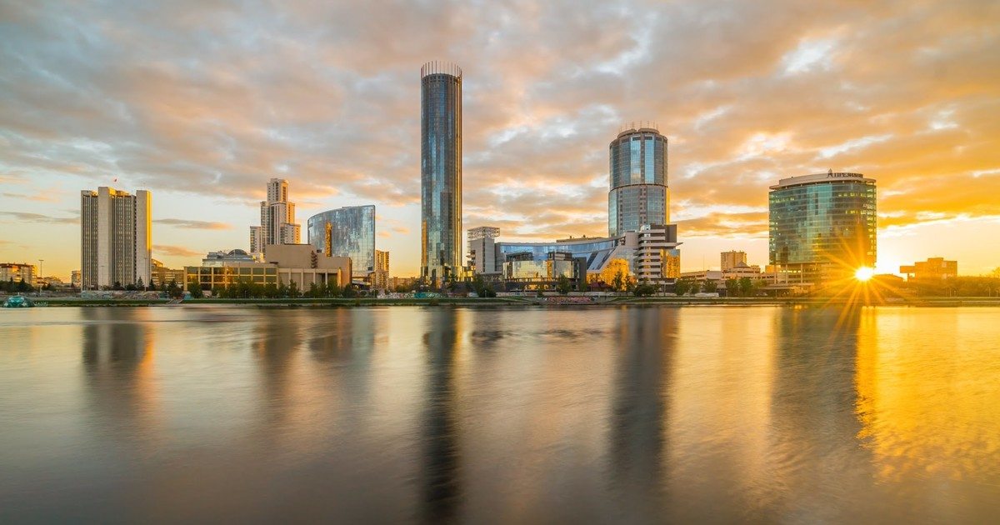

Descubra las montañas de Ural en esta excursión de día completo a la montaña Shunut desde Ekaterinburg en moto de nieve. Visite el punto más alto de los Montes Urales centrales y aprenda sobre la historia, la geología y la vida silvestre de esta.

Motos de nieve en las montañas de Ural.
Duración: 10 Horas
Instructor: Español, Inglés, Francés, Alemán y Ruso.
Viaja en el tiempo y aprende la historia de la ciudad de Ekaterimburgo durante los días de la URSS. ¡Participa en un recorrido a pie único de 3 horas diseñado como un juego de búsqueda en el que te convertirás en un espía para descubrir secretos!

Ilustración de Vladilir Ilich.
Duración: 3 Horas
Instructor: Inglés.
¿Quieres tener una vista panorámica de la ciudad? ¿Y qué hay de caminar por túneles clasificados? Este es un recorrido para aquellos que no tienen miedo a la oscuridad y las alturas.

Tour de 1 día por Ekaterimburgo.
Duración: 7 Horas
Instructor: Español, Neerlandés, Inglés, Francés, Alemán y Ruso.
Descubre la histórica Ekaterimburgo en un tour guiado. Observa las estatuas de los fundadores de la ciudad y los líderes comunistas y admira los edificios neoclásicos estalinistas.

Tour corto por Ekaterimburgo.
Duración: 3 Horas
Instructor: Inglés.
Para más información referente a tarifas o inquietudes, ingresa a Get Your Guide